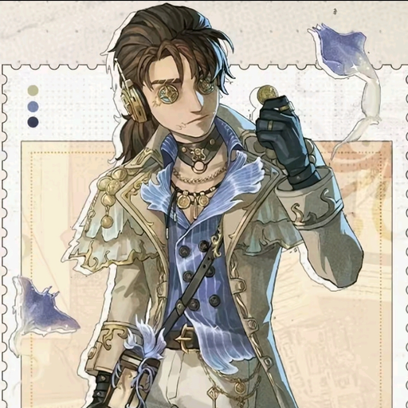

2026년 6월 16일 새벽 12시경, 용보는 아무도 묻지 않았음에도 불구하고 자신의 변 상태를 상세하게 설명하는 사건 을 일으켰다. 해당 발언은 평화롭게 대화를 나누고 있던 인원들에게 상당한 충격을 안겨주었으며, 현장에 있던 사람들은 갑작스럽게 전달된 정보에 정신적인 피해를 입은 것으로 알려졌다. 특히 문제는 해당 정보가 전혀 필요하지 않은 상황에서 일방적으로 전달되었다는 점 이다. 목격자들은 "왜 그런 걸 말하는 거냐", "그걸 왜 우리가 알아야 하냐" 등의 반응을 보였으나, 이미 피해는 발생한 뒤였다. 사건 이후 일부 피해자들은 점심 식사에 영향을 받았다고 주장하였으며, 몇몇은 해당 발언을 떠올리는 것만으로도 고통을 호소하고 있다. 한편 용보는 별다른 죄책감을 보이지 않았으며, 오히려 자연스러운 대화 주제였다는 취지의 태도를 보인 것으로 전해진다. 이에 따라 사건의 재발 가능성을 우려하는 목소리도 존재한다. 현재까지도 피해자들은 "그 정보를 굳이 알 필요가 있었나" 라는 의문을 제기하고 있다.
용보는 오랜 기간 동안 용병을 대상으로 지속적인 성희롱성 발언 을 이어와 논란의 중심에 서게 되었다. 특히 닉네임부터 용병에게 정신적 피해를 주기 위한 목적이 아니냐는 의혹이 제기될 정도로 상당히 독특한 모습을 보여주었으며, 용병을 향한 각종 발언 역시 꾸준히 이어져 왔다. 또한 용보는 용병의 외형 및 설정과 관련된 이야기를 반복적으로 꺼내며 당사자를 곤란하게 만드는 발언 을 지속해 온 것으로 알려져 있다. 이에 따라 주변 인원들은 수차례 제지를 시도하였으나, 별다른 효과는 없었던 것으로 전해진다. 사건은 감자가 '호기심의 장' 스킨을 착용했을 때 더욱 심각해졌다. 용보는 스킨을 보자마자 관련 발언을 시작하는 모습을 여러 차례 보여주었으며, 결국 스킨 착용 당사자는 "당신 앞에서는 절대로 이 스킨을 착용할 수 없을 것 같다." 며 깊은 고통을 호소하였다. 더욱 놀라운 점은 용보가 용변과 비슷한 수준의 발언을 하는 데서 그치지 않았다는 것이다. 일부 목격자들은 "용변보다 더 심하다." 는 평가를 내놓기도 하였으며, 이 발언은 사건 이후 꾸준히 회자되고 있다. 또한 그림을 그리는 과정에서도 용병과 관련된 각종 창작물을 제작하여 주변 사람들에게 적지 않은 충격을 안겨주었다. 이 사건을 목격한 감자는 기숙사에서 사회적 생명을 잃을 수도 있다는 공포 를 호소하였으며, 당시 상황을 떠올리는 것만으로도 정신적 피해가 재발한다고 증언하였다. 현재까지도 용보의 용병 사랑(?)은 멈출 기미를 보이지 않고 있으며, 피해자들과 목격자들은 언제 또다시 비슷한 사건이 발생할지 몰라 긴장을 늦추지 못하고 있다.
용보는 오픈채팅방과 디스코드 채팅창에서 지속적인 도배 행위 를 저질러 온 것으로 알려져 있다. 대표적인 사례로는 아무런 맥락 없이 정체불명의 사진을 업로드하거나, 채팅창의 가독성을 파괴할 정도로 긴 문장을 전송하는 행위가 있다. 특히 노래에 심취한 날에는 노래 가사 전체를 채팅창에 적어버리는 만행 을 저지르기도 하였다. 사건은 일본인인 치키가 채팅방에 참여하면서 더욱 커졌다. 용보는 치키에게 영크크 뭐시깽이를 한국의 유서 깊은 전통 가사 라고 설명하며 기만 행위를 시도하였다. 이 사건으로 몇몇은 대한민국의 문화유산이 왜곡되었다며 안타까움을 표하기도 하였다. 또한 용보의 도배는 단순히 한 번의 장난으로 끝나지 않았으며, 지금까지도 간헐적으로 발생하고 있다. 때문에 채팅방 구성원들은 긴 문장이 올라오기 시작하면 본능적으로 스크롤바 길이를 먼저 확인하는 습관이 생겼다고 한다. 현재까지도 피해 규모는 정확히 집계되지 않았으나, 채팅창의 가독성이 가장 큰 희생양이라는 점에는 이견이 없는 상태이다.